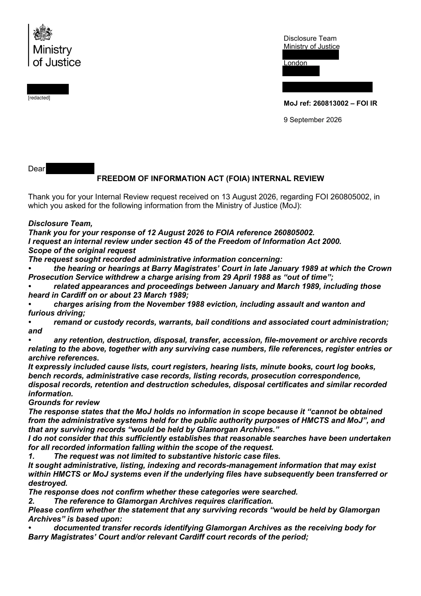

GHF-E106-R26-A2 acknowledgement only
FOI internal review 260813002 extension letter

Transcript
Disclosure Team Ministry of Justice [address redacted] London [address redacted] Requester [email redacted] MoJ ref: 260813002 – FOI IR 9 September 2026 Dear Requester , FREEDOM OF INFORMATION ACT (FOIA) INTERNAL REVIEW Thank you for your Internal Review request received on 13 August 2026, regarding FOI 260805002, in which you asked for the following information from the Ministry of Justice (MoJ): Disclosure Team, Thank you for your response of 12 August 2026 to FOIA reference 260805002. I request an internal review under section 45 of the Freedom of Information Act 2000. Scope of the original request The request sought recorded administrative information concerning: • the hearing or hearings at Barry Magistrates’ Court in late January 1989 at which the Crown Prosecution Service withdrew a charge arising from 29 April 1988 as “out of time”; • related appearances and proceedings between January and March 1989, including those heard in Cardiff on or about 23 March 1989; • charges arising from the November 1988 eviction, including assault and wanton and furious driving; •
Read more
remand or custody records, warrants, bail conditions and associated court administration; and • any retention, destruction, disposal, transfer, accession, file-movement or archive records relating to the above, together with any surviving case numbers, file references, register entries or archive references. It expressly included cause lists, court registers, hearing lists, minute books, court log books, bench records, administrative case records, listing records, prosecution correspondence, disposal records, retention and destruction schedules, disposal certificates and similar recorded information. Grounds for review The response states that the MoJ holds no information in scope because it “cannot be obtained from the administrative systems held for the public authority purposes of HMCTS and MoJ”, and that any surviving records “would be held by Glamorgan Archives.” I do not consider that this sufficiently establishes that reasonable searches have been undertaken for all recorded information falling within the scope of the request. 1. The request was not limited to substantive historic case files. It sought administrative, listing, indexing and records-management information that may exist within HMCTS or MoJ systems even if the underlying files have subsequently been transferred or destroyed. The response does not confirm whether these categories were searched. 2. The reference to Glamorgan Archives requires clarification. Please confirm whether the statement that any surviving records “would be held by Glamorgan Archives” is based upon: • documented transfer records identifying Glamorgan Archives as the receiving body for Barry Magistrates’ Court and/or relevant Cardiff court records of the period; [redacted] • HMCTS or MoJ retention, disposal or accession records; or • a general assumption about the location of historic magistrates’ court records. If a documented transfer exists, any such transfer, accession, file-list or related administrative record would itself appear to fall within the scope of the request. 3. The response does not describe the searches undertaken. For the purposes of the internal review, please confirm: • which specific MoJ/HMCTS systems, databases, repositories, legacy record series or indexes were searched; • whether historic or legacy records, including any surviving magistrates’ court registers, cause lists, hearing lists, minute books, court logs or bench records, were examined in addition to current administrative systems; • whether records relating to the former Barry Magistrates’ Court or to Cardiff proceedings during January–March 1989 were considered; • whether records concerning the retention, transfer or disposal of court files from that period were searched; and • whether any case numbers, file references, register entries or archive references survive even if the substantive files do not. I appreciate that FOIA does not require a public authority to create information which it does not hold. I am not asking MoJ/HMCTS to recreate historic case files or conduct a new investigation. The issue for review is whether the searches undertaken were sufficiently broad to identify recorded administrative, historical or records-management information falling within the scope of my original request. If, following review, no information within scope is held, I would be grateful for confirmation of the searches undertaken and the systems, repositories or record series examined. If any information is held but cannot be disclosed, please identify the relevant exemption(s), provide the reasoning required under FOIA, including the public-interest test where applicable, and disclose all reasonably segregable information. I will pursue any material held by Glamorgan Archives independently. I would nevertheless ask the internal review to establish, with specificity, the basis on which MoJ/HMCTS has concluded that it holds no information within the scope of the request. Regards, Your request is being handled under the FOIA and the FOI Code of Practice. Paragraph 5.5 of the FOI Code of Practice allows public authorities to extend the time recommended to conduct an Internal Review (20 working days) by a further 20 working days if the review is complex, requires consultation with third parties or the relevant information is of a high volume. Therefore, we are extending the time allowed to 9 October 2026 for the following reason(s): Complexity of request - further searches being made to ensure that the correct response was given in the first instance. Appeal Rights If you are not satisfied with this response, you have the right to apply to the Information Commissioner’s Office (ICO). The Commissioner is an independent regulator who has the power to direct us to respond to your request differently, if they consider that we have handled it incorrectly. You can contact the ICO at the following address: Information Commissioner’s Office online portal https://ico.org.uk/make-a-complaint/foi-and-eir-complaints/ Postal address Information Commissioner's Office Wycliffe House Water Lane Wilmslow Cheshire [address redacted] Yours sincerely National Support Unit | HMCTS
Artifact description
A liaison officer sends an extension letter for a Freedom of Information request without providing the requested information.
| Catalogue ID | GHF-E106-R26-A2 |
|---|---|
| What it is | PDF document from Ministry of Justice / HMCTS. Attached to an email received on 9 September 2026, their reference 260813002. 3 pages. |
| From | Ministry of Justice / HMCTS |
| Email received | 9 September 2026 |
| Their reference | 260813002 |
| Pages | 3 |
| File | 260813002 – FOI IR extension letter.pdf (140 KB) |
| State | Read |
Our integration
Part of the FOI thread with Ministry of Justice / HMCTS opened 9 September 2026. The thread's standing classification is “acknowledgement only”.
Concern to test: whether this reply answers the question as asked, or a narrower one. Not checked against the original request wording here.
What cuts against the case: a covering letter, form or acknowledgement decides nothing either way; it is kept so the thread is complete.
Related: The covering email · EV-0504 in the evidence catalogue · Timeline · Disclosure Dartboard